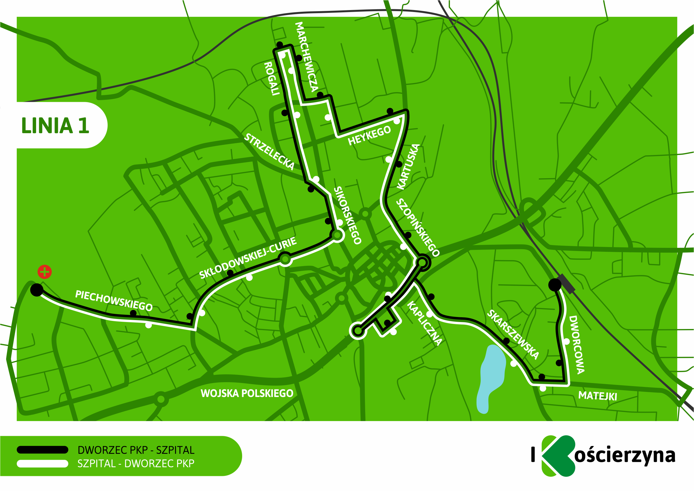

Wybierz swój przystanek, linię i kierunek
Poprzedni odjazd:
Najbliższy odjazd:
Kolejny odjazd:
×
×

×

Linia nr 3
- Dworzec PKP
- Dworcowa (Sędzickiego)
- Dworcowa (3 Maja)
- Młyńska/Galeria Wybickiego
- 8 Marca(Szkoła Jedynka)
- Staszica
- Skłodowskiej(Konopnickiej-"Szóstka")
- Skłodowskiej(Szydlice-Delikatesy)
- Małcużyńskiego
- Szpital